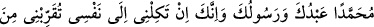

din yalnızca İslâm’dır.” buyurmuştur. İslâm dîninin hakikati tevhid, sûreti şerîattır ki
bunlar da şartlardır. Bu din ta o zamandan kıyâmete kadar hakikati değişmeyen tek
dindir. Tevhid özelliği, dînin bütün devrelerinde değişmeyen tek özelliğidir. Ancak yer,
zaman ve toplumlara göre şartların değişmesiyle sûretlerinde görülen değişiklikler,
asıldaki tekliğe ve hakikatin birliğine zıd düşmez.”
Katâde şöyle demiştir: “İslâm, Allah’dan başka ilah bulunmadığına şehâdet etmek,
Allah’dan geleni kabul; yani ikrâr etmektir.”
Gâlib el-Kattân şöyle anlatmıştır: “Kûfe’ye ticâret için gelmiştim. A’meş’e yakın bir
yere indim. Zaman zaman onun ziyâretine giderdim. Bir gece Basra’ya gitmek
istemiştim. A’meş teheccüde kalktı. Okurken Âl-i İmrân sûresinin on sekizinci âyetine
geldi, şöyle dedi: “Allah’ın şehâdet ettiğine ben de şehâdet ediyorum ve bu şehâdeti
Allah’a emânet bırakıyorum! Bu şehâdet benim Allah’a bıraktığım emânetimdir. Allah
katında gerçek din İslâm’dır.” A’meş bunu defalarca tekrar etti. Ben, “herhalde bu
konuda işittiği bir şey var” dedim. Namazımı kıldıktan sonra veda sırasında kendisine
sordum:
– “Senin bu âyeti okuduğunu ve defalarca tekrar ettiğini gördüm. Neden böyle
yaptın?” Bana:
– “Vallahi bir seneye kadar sana bu konuda cevap veremem.” dedi.
O günden itibaren kapısında kaldım ve bir sene orada ikâmet ettim. Sonra:
– “Ya Ebâ Muhammed bir sene geçti” dedim. Şöyle dedi:
– “Ebû Vâil, Abdullah ibn Mesud’dan haber verdi, o da Rasûlullah (s.a.)’in şöyle
buyurduğunu rivâyet ediyor.
“Bu şehâdetin sahibi kıyâmet gününde getirilince Allah Teâlâ şöyle der:
“Benim bu kuluma verdiğim bir sözüm vardır. Ben verdiğim sözü yerine getirmeye
en fazla hak sahibiyim. Bu sebeple kulumu cennete koyun.”[14]
Bu yorum “Allah bize söz verdi” îzâhına da uygun düşmektedir.
İbn Mesûd (r.a.) şöyle anlatıyor: “Peygamber Efendimiz (s.a.) bir gün ashâbına şöyle
dedi:
“Sizden biriniz her sabah ve akşam Allah’dan bir söz almaktan âciz mi
bulunuyorsunuz?” Ashâb-ı Kirâm da:
“Bu nasıl olur?” diye sormaları üzerine Peygamber Efendimiz şöyle buyurdular:
“Her biriniz her sabah ve akşam şöyle der: